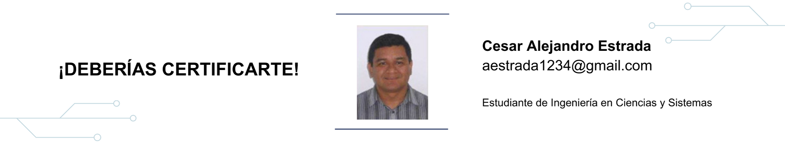

8 ¡Deberías certificarte!

8.2 Artículo
Las certificaciones dan credibilidad y confianza de nuestro conocimiento sea cual sea el área profesional a la que se pertenezca mostrando que estamos bien capacitados y que nuestros conocimientos en el área son sólidos para realizar la actividad requerida. Para nosotros, futuros Ingenieros en Sistemas, existe una gran variedad de certificaciones dependiendo el área a nuestra elección: programación, sistemas operativos, bases de datos, control de proyectos, auditoria de sistemas, redes y muchas más.
Estas certificaciones en una competencia muy valorada por las empresas que desean contratar nuestros servicios ya sea como empleados o consultores.
Hace unos meses me contactaron para realizar una consultoría sobre el ERP de SAP, dentro de la entrevista que me realizaron, me preguntaron acerca del tiempo de experiencia en la herramienta a lo que conteste 8 años (creí que impactaría). La siguiente pregunta fue: ¿estas certificado? Mi respuesta negativa generó dudas, como si mis 8 años de experiencia no fueran suficientes. Ya luego durante la consultoría demostré que si contaba con la suficiente conocimiento.
Al final del proyecto me dijeron “¡deberías certificarte!”.
No sé si tenían otro candidato, pero si lo hubiera habido con una certificación, es posible lo contratan en lugar mío.
Actualmente soy certificado en Microsoft, gracias a una empresa en la que trabaje en donde una de sus cartas de presentación ante los clientes era la cantidad de personal certificado. Además, Microsoft certifica a las empresas dependiendo la cantidad de personal certificado abriendo oportunidades de negocios como socios.
Durante el proceso de certificación recibí cursos, que son buena base de los producto, ayudando conocer la terminología utilizada. Luego se acompaña de práctica, práctica y más práctica, ya que los exámenes de certificación como en la vida real, nos enfrentamos a casos complejos que requieren conocimiento teórico y prácticos.
En esta etapa se me presentaron dos situaciones:
- Sin experiencia, recibir un curso e inmediatamente someterme al examen, lo cual fue un error, pues no gané el examen.
- Luego tuve la oportunidad de trabajar proyectos realizando instalaciones, estudios de rendimiento, configuraciones especiales a los sistemas operativos, posteriormente recibí unos cursos, me sometí a varios exámenes de certificación, los resultados fueron muy distintos, los aprobé.
En la primer experiencia el error estuvo en creer que el curso era suficiente para el examen. Consejo: “tómense el tiempo necesario para investigar sobre los puntos a evaluar, buscando foros sobre la experiencia de quienes se han sometido a los exámenes”, “revisen los manuales que están disponibles en internet”.
Básicamente la certificación consiste en ganar uno o varios examenes propuestos por los fabricantes de las herramientas. También existe nivel de certificación, que se basan en la experiencia y especialización en algún aspecto específico.
Por ejemplo Microsoft, proporciona un camino de certificación y especialización para el área de soluciones de servidores. En la gráfica siguiente se muestra de lo general o básico: Microsoft Technology Associate (MTA), a lo especializado: Microsoft Certified Solutions Expert (MCSE)
Figura 8.1: Certificación de servidores de Microsoft https://www.microsoft.com/learning/en-us/certification-overview.aspx
Otro ejemplo es CISCO, donde la certificación más popular es el Cisco Certified Network Associate (CCNA); de igual forma que como mostré con Microsoft se va de lo básico a lo especializado, en este caso la certificación máxima es Cisco Certified Internetwork Expert (CCIE)
Figura 8.2: Certificación CISCO http://www.cisco.com/web/learning/certifications/associate/ccna/index.html
Marcas como Oracle tienen varios niveles, lo cuales explican en la siguiente dirección: https://education.oracle.com
Todo esto no es gratis, una forma de iniciarse es aprovechar las oportunidades de empresa que apoyan las certificaciones, estas serán un agregado muy valioso a nuestra hoja de vida o curriculum como profesionales.
Algunos cursos estan valorados en US$1,000.00 o más, en ciertas ocasiones la certificación el contenido de la certificación se brinda en varios cursos, por lo que el precio se incrementa. Los exámenes podrían ser más baratos, para una certificación de MTA de Microsoft se cancela US$69.00 por el derecho al examen. Cisco para certificación CCNA es un costo de US$350, CCNP $500.00 y por el CCIE alrededor de los US$1,000 o más, este último el examen se hace fuera de Guatemala.
Los exámenes normalmente son en línea y hacen en un centro autorizado, dependiendo la certificación son más de 40 preguntas o casos a responder en tiempo estipulado. No se permite ningún documento u hoja de apoyo, en algunos casos te dan hojas en blanco y lápiz para algún cálculo. Cualquier anomalía da por anulado el examen, sin opción a recuperar lo pagado.
El patrocinio de una empresa resulta un compromiso mayor, según la política de la empresa si se pierde el examen lo debes pagar; o permiten someterse dos veces al mismo examen, si se pierde la segunda oportunidad se paga. En el caso de los cursos pueden solicitarte firmar un contrato para permaner “X” tiempo antes de decidir retirarte de la empresa, de lo contrario deberás pagar el valor del curso. Esto para no perder la inversión que han hecho en uno.
La 1ra. Edición de esta revista menciona en el artículo “Academia CISCO en la Universidad de San Carlos de Guatemala”, la cual menciona un intento de formar dicha Academia, la cual sin duda permitiría que los egresados tengan una competencia muy valiosa al finalizar su carrera. Algunas opiniones de profesionales indican que:
- “El 85 % de los directores de recursos humanos considera que las certificaciones en TI son una prioridad entre media y alta a la hora de contratar a profesionales de TI. (CompTIA, Employer Perceptions of IT Training and Certification, enero de 2011)”
- Los profesionales de TI obtienen una media en aumentos salariales del 9% inmediatamente después de obtener la certificación, y del 29 % a largo plazo, en comparación con compañeros que no cuentan con la certificación. (CompTIA, Employer Perceptions of IT Training and Certification, enero de 2011)
8.3 Conclusiones
- Nuestro estudio no termina al obtener el título universitario, debemos darle más valor a nuestros conocimientos agregando competencias con diplomados, cursos, especializaciones, postgrados y certificaciones.
- El beneficio de algunas certificaciones es que son avaladas y reconocidas mundialmente, lo que amplia nuestras oportunidades profesionales y nos permitirá ser emprendedores fuera de nuestras fronteras.
- Como todo, el conocimiento y las herramientas tecnologicas se van actualizando, lo que implica que constantemente debemos estar revalidando las certificaciones.
- Si una empresa nos contrata y da la oportunidad de tomar cursos y certificaciones no hay que desaprovecharla, pues nos servirá para nuevas oportunidades.
8.4 Referencias
- [1] Microsoft Certification Path. https://www.microsoft.com
- [2] IT Certifications and Career Paths CCNA Routing and Switching. http://www.cisco.com
- [3] Oracle Database 11g Certification Path https://education.oracle.com
- [4] ¿Por qué conseguir una certificación en productos y tecnologías de Microsofthttps://www.microsoft.com
- [5] 2013 IT Skills & Salary Report http://www.pearsonvue.com